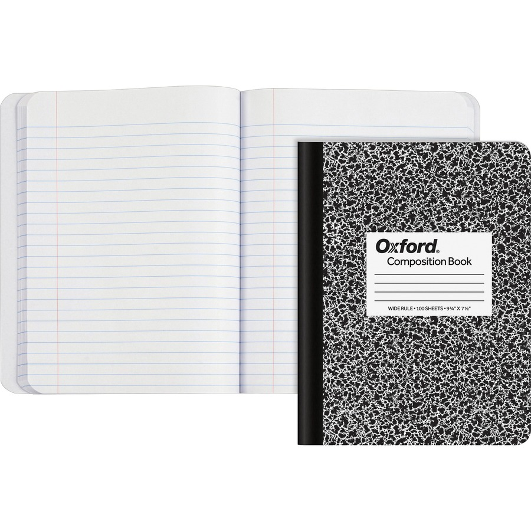

Your course notebook
I recommend that your course Notebook be a conveniently sized physical composition notebook. The notebook is a place for your thinking about Science & Authority, notes about the course readings, and reminders of questions to ask in class.
When you are assigned writing prompts, your response should be written in your Notebook. Write in a professional yet personal manner. Please write (and rewrite if necessary) using a pen.
When given a writing prompt, the default expectation is a 200-400 word response. It is helpful to write out the question/prompt as well as your answers (so as not to lose the context).
Bring your Notebook and relevant readings to class. Always come prepared to share what you have written with other students!
